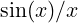

| Up | Next | Prev | PrevTail | Tail |
LIMITS is a fast limit package for REDUCE for functions which are continuous except for computable poles and singularities, written by Stanley L. Kameny, based on some earlier work by Ian Cohen and John P. Fitch. The Truncated Power Series package is used for non-critical points, at which the value of the function is the constant term in the expansion around that point. l’Hôpital’s rule is used in critical cases, with preprocessing of ∞−∞ forms and reformatting of product forms in order to apply l’Hôpital’s rule. A limited amount of bounded arithmetic is also employed where applicable.
The standard way of calling limit, applying all of the methods, is
The result is the limit of exprn as var approaches limpoint. To compute the of

at the point 0, enterIf the limit depends upon the direction of approach to the limpoint, the onesided limit functions limit!+ and limit!- may be used:
| limit!+(⟨exprn:algebraic⟩, ⟨var:kernel⟩, ⟨limpoint:algebraic⟩) : algebraic |
| limit!-(⟨exprn:algebraic⟩, ⟨var:kernel⟩, ⟨limpoint:algebraic⟩) : algebraic |
they are defined by:
| limit!+ (limit!-) (exp,var,limpoint) →limit(exp*,𝜖,0), |
| exp*=sub(var=var+(-)𝜖2,exp) |
for example,
| Up | Next | Prev | PrevTail | Front |